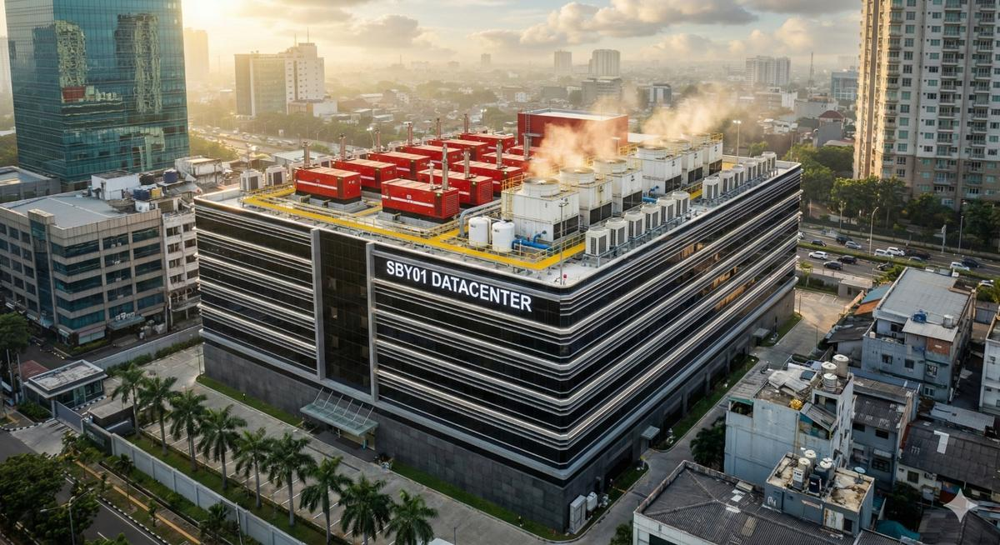

NORMAL
Critical
0
Warning
0
Maint / Bypass
0
Comms
OK
Stale
0
Last Update
--
Data Quality
GOOD
Scenario
Simulated
Legal Notice
This conventional data center dashboard is independent personal research using publicly available standards and reference datasets. It does not represent any current or former employer.
All metrics and calculations are for educational and estimation purposes only, not legal, financial, investment, procurement, safety, or engineering advice. Validate final decisions with qualified professionals and local regulations.
Use of this website is subject to our Terms and Privacy Policy. All rendering runs in-browser.
PUE
1.45
Target ≤1.5
WUE
1.20
L/kWh
Grid factor
0.42
kgCO₂/kWh facility
IT Load
1,850
kW
Uptime
99.98
% YTD
Temp
22.4
°C Avg
Chillers
2/3
Running
Alarms
0
Normal

PUE
1.45
IT Load
1.85 MW
CHW
7.2°C
Temp
22.4°C
Fuel
85%
RH (outdoor)
48%